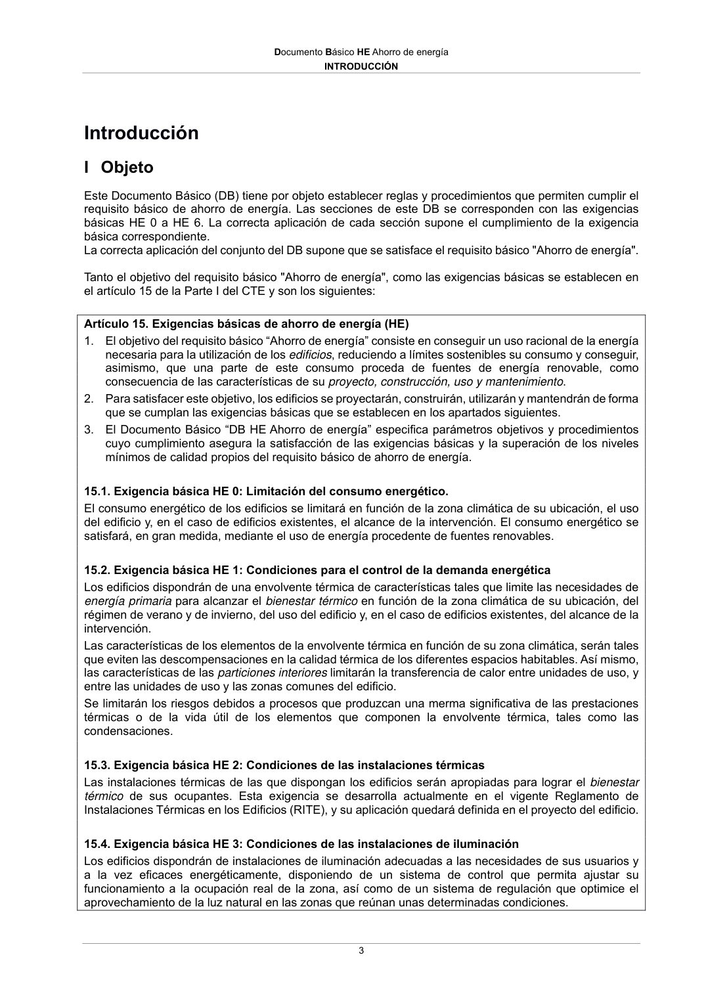

DB-HE · Fragmento de PDF p3 · versión 2022-06-14 · capa oficial
Formatos: JSON compacto · Markdown · PDF fuente
Ámbito del documento · texto del ámbito · documento y tablas
ID técnico a0006 · PDF pág. 3 · jerarquía no validada por persona · no es capítulo: sin_linea_de_encabezado · padre: raíz · literal original en el contenido: «Artículo 15. Exigencias básicas de ahorro de energía (HE)»
Artículo 15. Exigencias básicas de ahorro de energía (HE) 1. El objetivo del requisito básico “Ahorro de energía” consiste en conseguir un uso racional de la energía necesaria para la utilización de los edificios, reduciendo a límites sostenibles su consumo y conseguir, asimismo, que una parte de este consumo proceda de fuentes de energía renovable, como consecuencia de las características de su proyecto, construcción, uso y mantenimiento. 2. Para satisfacer este objetivo, los edificios se proyectarán, construirán, utilizarán y mantendrán de forma que se cumplan las exigencias básicas que se establecen en los apartados siguientes. 3. El Documento Básico “DB HE Ahorro de energía” especifica parámetros objetivos y procedimientos cuyo cumplimiento asegura la satisfacción de las exigencias básicas y la superación de los niveles mínimos de calidad propios del requisito básico de ahorro de energía.

PDF fuente redistribuible: copia fiel enlazada en esta página (SHA256 verificado).